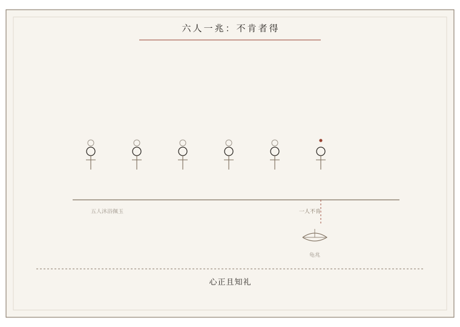

檀弓下 · 四·五十 · 第 375 课
石骀仲卒，无适子，有庶子六人，卜所以为后者。曰：「沐浴佩玉则兆。」五人者皆沐浴佩玉。石祁子曰：「孰有执亲之丧，而沐浴佩玉者乎？」不沐浴佩玉。石祁子兆，卫人以龟为有知也。
说什么事：卫大夫石骀仲死，无嫡子，有庶子六人，须以卜定后。掌卜者说：沐浴佩玉则得吉兆。五人皆沐浴佩玉以争之，独石祁子不肯，说：「哪有正在为父亲守丧的人，还去沐浴佩玉的？」结果石祁子得兆。卫人于是说：龟是有知的。
落在哪一层：以「不肯」得兆。一个人保住丧礼的样子，反而被拣中。
为何编在此位：上节以行定名，此节以守定后。名由人断，后由卜断，而卜所断者正是那个不肯破礼的人。
【经】石骀仲卒，无适子，有庶子六人，卜所以为后者。曰：「沐浴佩玉则兆。」五人者皆沐浴佩玉。石祁子曰：「孰有执亲之丧，而沐浴佩玉者乎？」不沐浴佩玉。石祁子兆。卫人以龟为有知也。
【注】骀仲，卫大夫石碏之族。／莫适立也。／言齐絜则得吉兆。／心正且知礼。
【疏】此一节论龟兆知贤知之事，各依文解之。／既有庶子六人，莫适立也，故卜所以堪为后者。其掌卜之人谓之曰：「若沐浴佩玉，则得吉兆。」所以须有卜者，《春秋左氏》之义，故昭三十六年云：「年钧以德，德钧以卜。王不立爱，公卿无私。」若《公羊》隐元年云：「立适以长不以贤，立子以贵不以长。」何休作《膏肓》难《左氏》云：「若其以卜，隐、桓以祸，皆由此作，乃曰古制，固亦谬矣。」郑箴之云：「立长以嫡不以贤，固立长矣。立子以贵不以长，固立贵矣。若长均贵均，何以别之？故须卜。《礼》有询立君、卜立君，是有卜也。」是从《左氏》之义。／「孰有」至「者乎」。居亲之丧，必衰绖憔悴，安有居亲之丧，而沐浴佩玉者乎？言不可，郑云「心正且知礼」者，不信邪言是心正，居丧不沐浴佩玉是知礼也。
石骀仲 卫大夫，石碏之族。
适子 嫡子。
庶子六人 妾所生之子六人。
卜所以为后者 以卜决定谁可做继承人。
沐浴佩玉则兆 先沐浴、佩玉，然后灼龟，则得吉兆。
兆 龟甲灼后的裂纹，吉凶由此看。
石祁子 六庶子之一，后为石氏之嗣。
孰有 哪有。
执亲之丧 为父亲守丧期间。
卫人以龟为有知 卫人因此认为龟有灵知。
石骀仲死了，没有嫡子，有六个庶子，于是用卜来决定谁做继承人。掌卜的人说：「沐浴佩玉，就会得吉兆。」五个人都去沐浴佩玉。石祁子说：「哪有正在为父亲守丧，却去沐浴佩玉的人呢？」他不沐浴佩玉。结果石祁子得吉兆。卫人因此认为龟是有知的。
此章记一次选择。六个人争一个位置，争的法子由卜者给出：先把自己弄干净、弄漂亮。
五个人照做了。一个人没有——因为他父亲还没下葬。
第一层 无适子而立庶：礼的缺口 注云「莫适立也」。
礼能定常，不能定变。 有嫡则立嫡，无嫡则六人并列，礼到这里便无话可说，须借卜。
此一节正写在礼的边界上：不是所有事都有答案，有些事只能问。
第二层 「沐浴佩玉则兆」：一个陷阱 此语出自掌卜者，非礼之文。
设此语者，或以为「洁则神享」，然忘了一件事：此家正在丧中。
丧中沐浴佩玉，是把吉事之容施于凶事之期。故这一条卜前之条件，本身就不合礼。
第三层 五人与一人 五人皆沐浴佩玉，是一句极冷的话。
五个人都照办了，说明这条不合礼的条件，在当时的卫国人看来是合宜的。 礼之坏，不坏在有人破礼，坏在破礼成了通例。
第四层 石祁子之问：一句反问立住全场 「孰有执亲之丧，而沐浴佩玉者乎？」
他不辩「卜者之言非礼」，只问「这时节能做这事吗」。以时断事，不以理论事。
郑注四字断之：「心正且知礼。」心正者，不信邪言；知礼者，居丧不沐浴佩玉。
一言两得：对外拒邪说，对内守丧容。
第五层 「石祁子兆」：龟随人还是人随龟 得兆的是那唯一不肯照办的人。
卫人曰「龟为有知也」——这是当时人的解释。而郑注不作此解，只说「心正且知礼」。
同一件事，两种读法：一读为神，一读为人。 郑取人。
此一取舍，是《礼记》全书的立场：礼不靠灵验立，靠人行立。
第六层 卜与礼之先后 疏引《左传》「年钧以德，德钧以卜」，又引郑箴何休「若长均贵均，何以别之？故须卜」。
此一层说明卜在礼中的位置：卜不是替代礼，是补礼之缺。 有德可据则据德，无德可据则问卜。
而此节所示，是卜之前先有一道礼的筛：不合丧礼的人，先自己出局。
与今日何干 今之择人，多问「谁更能」，少问「谁此时不宜」。
此章给一句话：有些资格，是在不该做的事上让出来的。
| 左 | 右 |
|---|---|
| 无适子 | 礼有缺口 |
| 庶子六人 | 莫适立 |
| 沐浴佩玉则兆 | 卜者设一条件 |
| 五人皆沐浴佩玉 | 俗成通例 |
| 石祁子问 | 以时断事 |
| 不沐浴佩玉 | 守丧之容 |
| 石祁子兆 | 不肯者得 |
| 龟为有知 | 卫人之解 |
| 心正且知礼 | 郑之解 |
画庭院中的一片空地，视点略微俯视。地上并排立着六个人形，身形相同，皆作正面站立之状；前五人的头顶各悬一枚小玉环（以细圈示意），第六人头顶空着，且其衣襟上多一道竖褶。六人之前的地上置一片龟甲，甲上有中缝一道与横裂一道。不画文字。赭色只用在那第六人空着的头顶上方的一点。
